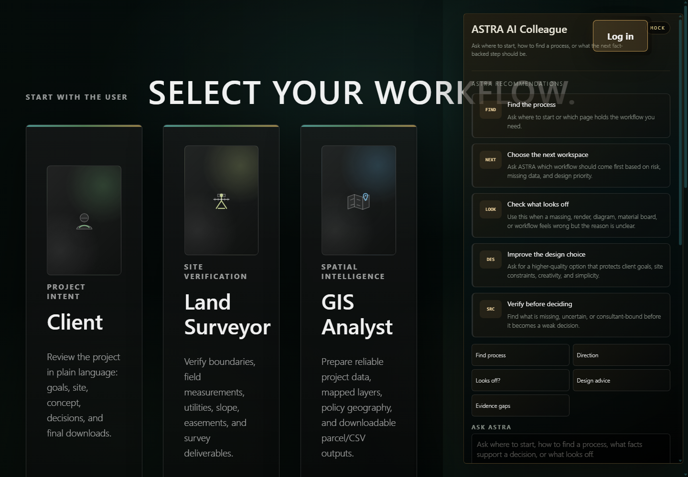
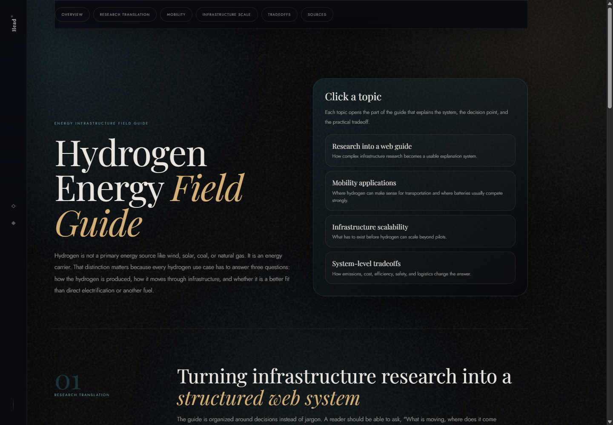
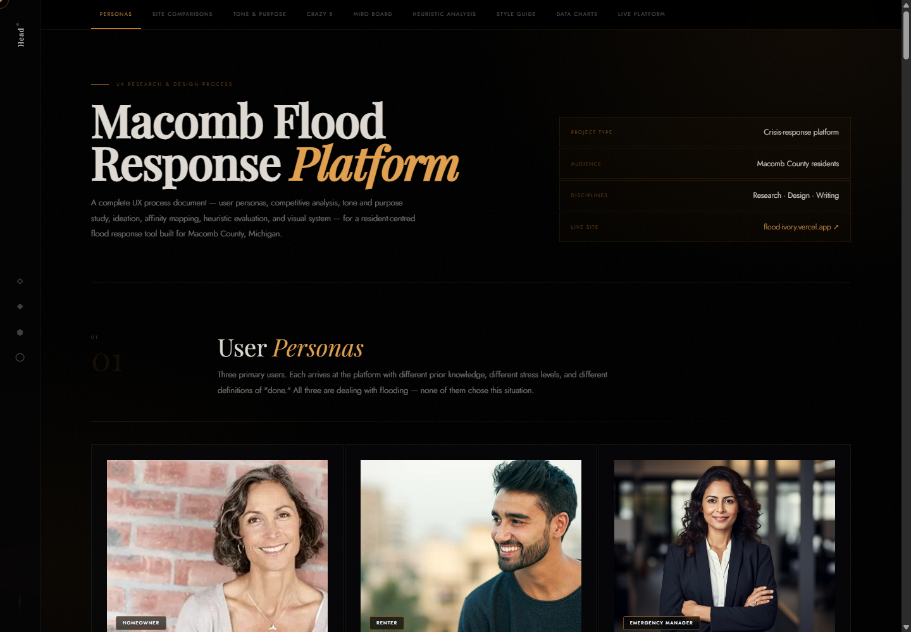

Question. Answer. Move on.
Aalborg interview narrative
Human-AI interaction for architectural continuity.
Project context stays alive.
The system supports judgment.
Opening claim
Design teams often have enough tools, but not enough continuity.
fragmentation
cognitive load
decision quality
Why this question became mine
My background moved from systems to places to human-centered interaction.
Systems, geography, and responsibility.
GIS, infrastructure, zoning, sustainability.
Writing, evidence, usability, accessibility.
Energy, flooding, policy, IoT, design tools.
Education
My training connects programming, planning, English research, and HCI.
Programming / Planning / English / HCI
Macomb
ASU
ASU
ASU
Macomb Community College.
Arizona State University.
Arizona State University.
Arizona State University.
Work context
My applied work kept returning to fragmented systems and decision pressure.
GIS, service design, operational workflows.
Infrastructure, technical synthesis, transition planning.
Local risk, public guidance, stressed users.
System mapping, data flows, implementation logic.
Current solutions
Existing tools solve pieces, not the continuity between them.
Fast generation.
Strong site intelligence.
Rule checking.
Sustainability analysis.
Asset continuity.
Generic assistance.
Why I can work on this
My skillset sits between technical systems, research, and design practice.
research
systems
built environment
prototype
Prototype thesis
ASTRA is an AI-led continuity layer for early architectural design.
Project inputs
Fragmented evidence
GIS
Policy
CAD
Sun
AI-led continuity layer
ASTRA
Memory, evidence, role context, next actions.
Design outcomes
Traceable decisions
Revise
Cite
Flag
Review
verifiedmissinguncertainconsultant reviewpermit riskcost risk
Prototype walkthrough
Prototype functions with the live project below.
01Role entry
Different users, same project context.
02Project memory
Client goals, site facts, rules, metrics.
03Evidence layer
Verified, missing, uncertain, at risk.
04AI colleague
Source checks, critique, next actions.

Live research artifact
ASTRA Site Intelligence
Role-based dashboard, project memory, evidence status, and grounded AI guidance.
Next technical layer
The assistant should be grounded, free-first, and explicit about uncertainty.
The next version should search project memory first, cite evidence, mark uncertainty, and use specialist reasoning when a design decision becomes technical.
Local help for explanation and workflow guidance.
Search project data before answering.
Compliance, sustainability, sun, materials.
Start free-first, compare licensed value later.
verifiedmissinguncertainconsultant reviewpermit riskcost risk
Project evidence
Three projects show one pattern: complex systems need interpretable structure.

01 / Research translationHydrogen Energy
Technical infrastructure becomes a decision guide.

02 / Policy and riskMacomb Flood Response
Risk information becomes public guidance.
03 / HCT prototypeASTRA Site Intelligence
A research probe for architectural continuity.
Research agenda
What I want to study is not whether AI can produce more output.
I want to study whether HCT-assisted interaction can help architects sustain continuity, interpret evidence, revise with confidence, and protect professional agency.